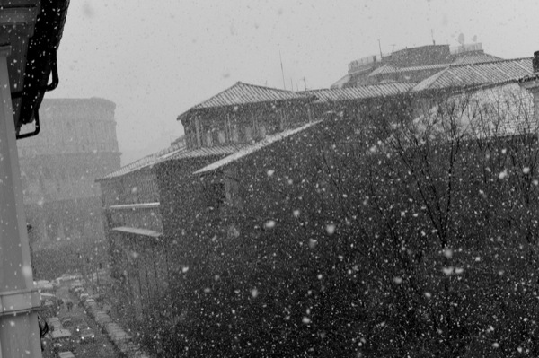

Rome + Snow

First in Simon’s Rome Snow story. Taken Friday evening out our window, down Via San Giovanni in Laterano.
Who would have guessed that Romans are so prepared for snowy weather? Though most do not know how to drive in it, and though they cancelled schools and public offices, they certainly have the right clothes for it. And by right I mean the boots, pants, coats, hats and gloves that keep you warm in temperatures below zero. I suppose that settimana bianca calls for a closet all to its own and that’s the closet where the clothes came from; but it also could be that the clothes have been sitting there year after year and yesterday they got to wear them, finally.
As I was grocery shopping and later, when Simon and I went for a walk down the snow dusted Via Fori Imperiali, it was obvious that bright colored Moon Boots would be a staple in Rome if Rome was always covered in snow. Who knew? Strange hats, fur coats, snow suits for babies and adults alike filtered down the road flooded with foot traffic, Italians come from the outskirts, to see the Colosseum and the Forum shimmering in its white best for the first time in twenty-five years. There were so many people that the authorities closed the road to cars.
More noticeable than the strange get-ups and incongruity of a white Rome, was the joyfulness. At the butcher, the supermarket, and the fruit stand, people spoke excitedly. Snow balls were thrown by all ages and snow men and a snow walrus and snow people stood sentinel at corners, on benches and in front of Marcus Aurelius. Laughing and shouts could be heard down the streets and everyone, I mean everyone, had a camera.
Simon says that snow is magical and maybe because snow was my de rigueur every winter the magic wears off once my feet are wet and cold (unlike the Romans, I am not all that prepared). I love snow in the forest because of the deathly silence and I love it on a moon filled night when it glows with an icy blue pallor and sends shadows sprawling over untainted smoothness. But I can’t say I’m all that enamored with Rome in the snow.
It’s still hanging around on the roofs and in the cold of our apartment, even though the Mediterranean sun is trying to poke through. So I’m curling up with tea, a book and a blanket to wait until it melts away. (But I must add, waking up yesterday morning still warm from sleep, the trees of Colle Oppio and near San Clemente out our window laden with peaceful whiteness like the buried streets, were beautiful.)
· · · · · · · · · · · · · · · · · · · ·